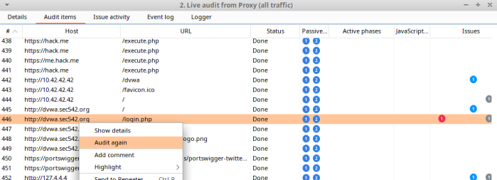
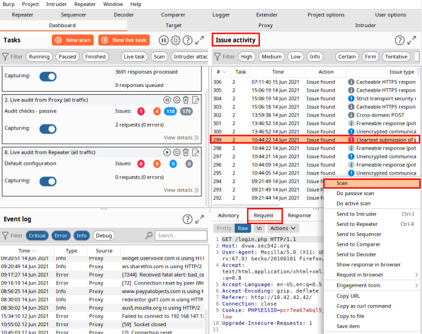

Retesting and Remediation Verification
When we ahve finished an audit for a
client, then the client come back later saying he has remediated the issue
We can do a quick
verification:
• Dashboard → Tasks → (choose task) View Details
1) Audit Items
2) Find the
specific audit item in question
3) (Right-click) “Audit again”
• Dashboard → Issue Activity
1) Find the specific audit item in
question
2) Scan
